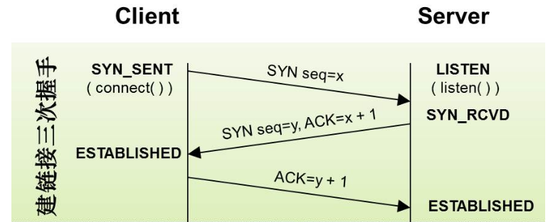
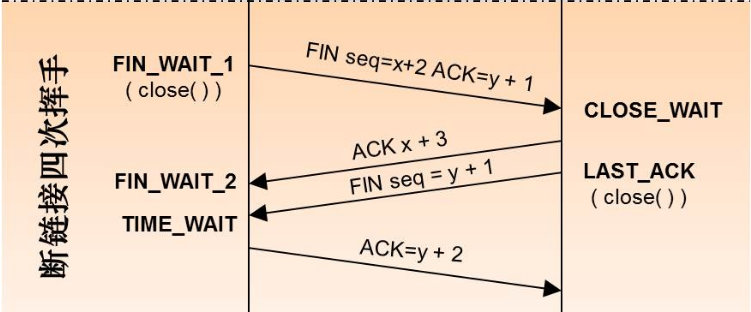
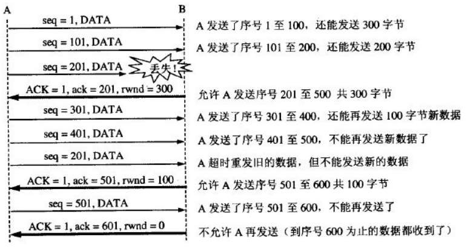

网络分层
OSI七层模型：
| OSI层 | 功能 | 协议 |
|---|---|---|
| 应用层 | 文件传输、电子邮件、文件服务、虚拟终端 | TFTP、HTTP、SNMP、FTP、SMTP、DNS、Telnet |
| 表示层 | 数据格式化、代码转换、数据加密 | 没有协议 |
| 会话层 | 解除或建立与别的接点的联系 | 没有协议 |
| 传输层 | 提供端对端的接口 | TCP、UDP |
| 网络层 | 为数据包选择路由 IP | ICMP，RIP，OSPF，BGP，IGMP |
| 数据链路层 | 传输有地址的帧以及错误检测功能 | SLIP，CSLIP，PPP，ARP，RARP，MTU |
物理层 |以二进制数据形式在物理媒体上传输数据 | ISO2110，IEEE802，IEEE802.2|
TCP|IP 四层模型：
- 网络接口层（链路层）：
- 网络层： IP,ICMP,IGMP，【ARP,RARP】
- 传输层：TCP ,UDP,UGP
- 应用层：Telnet,FTP,SMTP,SNMP.
ARP, RARP 在OSI七层模型中，是属于数据链路层的，但是在TCPIP模型中，它属于整个TCPIP协议簇的一部分，属于网络层。
物理层
以二进制数据的形式在物理媒介上传送数据（无线，光钎）
数据链路层
提供一个设备到另外一个设备的数据传输功能，寻找设备依靠设备的MAC地址。所以在这一层传送的数据包需要源MAC地址和目的MAC地址的信息。
ARP : 地址解析协议，把IP地址解析程Mac地址；RARP是逆地址解析协议，把Mac解析成IP地址； 网络层的通信依靠的是IP地址，而数据链路层通信依靠的是Mac地址。
ARP协议的过程： 主机A将包含 本机IP地址和本机Mac地址 和 要请求的目标IP地址 的ARP请求广播到网络上的所有主机，网络上的所有主机收到ARP请求的广播之后比较目标IP地址和自己的IP地址是否一样，如果不一致就忽略，如果一致，记录下此ARP包中的源IP和Mac地址的对应关系，然后发送自己的IP地址和Mac地址。
ARP 欺骗： 通过伪造ARP应答包的方式 改变目标主机中IP-MAc地址的对应关系，从而劫持目标主机的通信信息。 这种方式只有在局域网内有效。
网络层
提供终端对终端的数据传输功能，寻找目标依靠的是IP地址，在这一层传输的数据包需要有源IP地址和目的IP地址。
ICMP: 网际控制报文协议(差错与控制协议)，运行与IP协议之上(ICMP报文封装与IP数据包的数据部分，在IP数据报的头部中的协议字段指出数据中存在ICMP报文), 主要的功能是传输差错信息和传输控制信息。
传输层
提供应用程序到应用程序的数据传输服务，区分不同的应用程序依靠的是端口号，在这一层传输的数据包需要有源端口号，目的端口号。
访问一个网址的过程
- 根据网址解析出主机名称，例如www.baidu.com
- 根据主机名，查找对应的IP地址，首先在本机的hosts中寻找，没有则根据本机配置的首选DNS服务器的地址，使用DNS协议去DNS服务器上查找，DNS协议使用UDP传输数据，默认端口号是53. DNS服务器是一个树形结构，如果该DNS服务器查询不到，会将请求发送到上一级的DNS服务器查询。
- 发送HTTP请求。 HTTP是工作在TCP协议之上的应用层的协议，它和服务器的连接使用的三次握手和四次挥手的机制，可以确保可靠的传输。
- 服务器收到HTTP请求之后，解析该请求，发送所请求的内容。
TCP三次握手和四次挥手
TCP协议的头部格式

Source Port和Destination Port:分别占用16位，表示源端口号和目的端口号；用于区别主机中的不同进程，而IP地址是用来区分不同的主机的，源端口号和目的端口号配合上IP首部中的源IP地址和目的IP地址就能唯一的确定一个TCP连接；Sequence Number:用来标识从TCP发端向TCP收端发送的数据字节流，它表示在这个报文段中的的第一个数据字节在数据流中的序号；主要用来解决网络报乱序的问题；Acknowledgment Number:32位确认序列号包含发送确认的一端所期望收到的下一个序号，因此，确认序号应当是上次已成功收到数据字节序号加1。不过，只有当标志位中的ACK标志（下面介绍）为1时该确认序列号的字段才有效。主要用来解决不丢包的问题；Offset:给出首部中32 bit字的数目，需要这个值是因为任选字段的长度是可变的。这个字段占4bit（最多能表示15个32bit的的字，即4*15=60个字节的首部长度），因此TCP最多有60字节的首部。然而，没有任选字段，正常的长度是20字节；
三次握手

第一次，客户端发送请求连接报文(编程中一般用connect())，SYN = 1， ACK = 0，seq = x, （这两个标志位是
TCP Flag中的两个，每个用一个比特位表示，连接请求的时候，ACK=0，SYN = 1； 连接响应的时候， ACK = 1， SYN = 1）. 发送完之后客户端进入SYN_SEND状态，等待服务器的响应。服务器收到客户端发送的请求建立连接的报文，设置
Acknowledgment Number = x + 1, Sequence Number = y, SYN = 1, 发送给客户端，服务器进入SYN_RECV状态； 服务器这次发送的包含两个信息，一个是应答客户端请求的信息，ACK = x + 1, 另外一个和客户端一样，是请求和客户端建立连接的请求报文，两者在一起合成一个报文发送。客户端收到服务器来的消息后，发送确认消息
ack = y + 1, 发送完之后, 进入established状态，服务器收到消息之后也进入这一状态。
四次挥手

主机1向主机2发送
FIN报文，进入FIN_WAIT1状态主机2收到主机1发送的
FIN报文，向主机1回一个ACK报文，主机1进入FIN_WAIT2状态，这个时候主机2其实是告诉了主机1， 我同意了关闭连接的请求。 主机1已经确认主机2同意了关闭连接的请求，此时主机1不再发送数据到主机2，等待主机2请求关闭连接的信息。主机2向主机1发送
FIN报文，主机2进入LAST_ACK状态。主机1收到主机2发来的
FIN报文，知道主机2该处理的都已经处理完了，不会再发送来消息了，所以发送ACK报文到主机2，主机1进入TIME_WAIT状态， 主机2收到ACK报文，关闭连接。 主机1在等待2MSL之后，没有收到来自主机2的消息，正常关闭连接。
参考文献: 简析TCP三次握手与四次挥手
TCP 流量控制
如果发送方数据发送的过快，接收方来不及接收，就会造成数据的丢失，而TCP协议需要确保数据的有序到达，所以流量控制是很重要的一个方面。 利用滑动窗口可以方便的在TCP连接上实现对发送方的流量控制。
A向B发送数据，则在建立连接的时候，B会告诉A，我的接收窗口是 400 字节，发送方A的窗口不能超过B给出的接收窗口的值。 A在发送数据的时候，会记录已经发送的数据量，如果超过400字节，就不再发送新的数据，但是可以发送以前发送过的数据(比如丢失的数据)， 收到B端发送过来的带有调整接收窗口大小的报文，可以重新按照新的窗口大小发送数据。下面是一个示意图：

TCP拥塞控制
拥塞控制与流量控制不同，拥塞控制是对整个网络的控制，需要在节点之间交换信息和各种命令，所以拥塞控制本身增加了网络的开销。 拥塞控制的主要方法有： 慢开始， 拥塞避免， 快重传和快恢复。具体方法参考这里.
TCP和UDP的区别
TCP和UDP都属于传输层的协议，正常工作都需要端口号。
TCP协议是面向连接的，需要先建立连接之后才能发送数据，它的传输是可靠传输，可以确保发送的信息到达目标端口。因为其提供了流量控制，超时重发，数据检验等功能，所以负载比较大，传输速度慢，特别是在拥挤的网络中。
UDP协议是非连接的协议，发送数据之前不需要首先建立连接，直接根据数据包中的目标地址发送数据过去。正因为这样，UDP是不可靠的传输，不能确保发出去的信息能够达到目标地址。 它的优点是负载小，传输速度较快，可以支持一对一，多对一，一对多，和多对多的通信。要是使用UDP协议来实现可靠传输，需要自己实现上层的控制逻辑。
IP地址和子网掩码
IP地址
在TCPIP通信协议的基础上进行通信的两台电脑，必须有自己的IP地址唯一的标识自己，如果是广域网，IP地址由NIC统一分配，如果是一个局域网，可以按照自己的喜好分配IP地址(不与其他的网络通信的情况下)。
IP协议有版本4和版本6之分，版本4是目前广泛使用的协议，它使用32个字节表示一个IP地址。IP地址分为4段，每段8位，可以表示0-255的数字。最多能够区分的主机数量是42亿9千多万，在今天已经不够使用了。
IP地址右两部分组成： 网络号 + 主机号； 前面若干位表示网络号，唯一的标识一个网络，后面剩下的位数标识一个主机。 根据网络号所占用的位数的不同，IP地址可以分为A,B,C,D,E五类IP地址。
假设IP地址用w.x.y.z表示，每个字母代表8位二进制位
| 类别 | 网络号 | 主机号 | W的取值范围 | 每个网络的主机数量 |
|---|---|---|---|---|
| A | w | x.y.z | 1-126 (0) | 2^(24) - 2 |
| B | w.x | y.z | 128-191 (10) | 2^(16) - 2 |
| C | w.x.y | z | 192-223 (110) | 2^(8) - 2 |
| D | w.x.y.z | 224-239 (1110) | 用于多播 | |
| E | w.x.y.z | 240-247 (1111) | 保留未用 |
每个网络上主机数量的计算方法
2^(主机号占用的比特位) - 2； -2是因为规定了两个保留地址：主机部分全部为0的地址引用为一个网络(表示这个网络), 主机部分全为1的地址称为广播地址，它同时指向一个网络上的所有主机。
网络号能表示的网络数量的计算方法
A类地址，只能取1-126，所以A类地址可以表示126个网络；
B类地址，用两个字节表示网络号，第一个字节的取值是128-191,第二个字节可以取0-255，所以总的数量是(191-128+1)*256=16384个；
C类地址，三个字节，同理，可以表示的网络数量为(223-192+1)256256=2097152个。
常用的十进制和二进制的对应
| 十进制 | 二进制 |
|---|---|
| 128 | 1000 0000 |
| 192 | 1100 0000 |
| 224 | 1110 0000 |
| 240 | 1111 0000 |
| 248 | 1111 1000 |
| 252 | 1111 1100 |
| 254 | 1111 1110 |
| 255 | 1111 1111 |
子网掩码
子网掩码是用来判断任意两台的计算机是否是属于同一子网络的：将IP地址和子网掩码按位与之后，如果结果相同，则两台电脑处于同一个子网中。
子网掩码由连续的1和连续的0组成，连续的1的个数等于子网网络号的长度。
子网 ： 这里指的是广播报文可以直达的所有连接在一起的主机构成的网络，和网络号不是一回事。网络号相同的网络是同一个网络，在该网络下还可以划分子网，占用一些比特位给子网标号，使得IP地址变成：网络号+ 子网号+主机号 三段的格式。
划分子网一是为了节约IP地址空间，更好的利用好每一个IP地址； 二是为了不同子网之间的隔离。
HTTP|GET|POST
HTTP协议
HTTP协议是应用层无状态(对事务处理没有记忆能力，如果后面的处理必须使用前面的信息，需要重新传输前面的结果),无连接(每次连接(TCP连接)只处理一个请求，处理完成之后就断开连接)的协议，它可以传输任意的数据类型(数据类型在HTTP协议字段Content-Type指出)。 它提供的请求方法主要有get,post,head等方法。
HTTP状态码：
一共有五类：1xx 表示请求已经被成功接收； 2xx 表示成功; 3xx 表示重定向，要完成请求还需要进一步的操作； 4xx 表示客户端错误； 5xx表示服务器端错误。
| 常见的HTTP错误代码 | 含义 |
|---|---|
| 200 | OK，客户端请求成功 |
| 301 | 请求的资源永久移动到新位置 |
| 302 | 请求的资源临时移动到了新的位置，下次请求还应该使用原来的位置 |
| 304 | 请求的资源未被修改过 |
| 400 | bad request, 客户端请求有语法错误 |
| 401 | unauthorized, 请求未经过授权 |
| 403 | forbidden, 服务器收到请求，拒绝提供服务 |
| 404 | not found, 请求的资源不存在 |
| 500 | internal sever error, 服务器发生不可预期的错误 |
| 503 | sever unavailable, 服务器当前不能处理请求 |
参考文献： HTTP协议
GET 和 POST
get 和 post 是HTTP协议中定义的两种请求的方法，get的含义是请求信息，不改变服务器上的信息； post的含义是提交信息，可能会改变服务器的信息。但是实际使用的时候并不是严格按照这样的要求使用的，一般可以把两种方式都看成传输信息的方式，只是信息传输的方式不同。
GET方式是把传输的数据附在URL的末尾传输的，优点是可以添加到书签，缺点是安全性差，长度受限制。
POST方式是把传输的数据放在HTTP报文里面的，优点是传输的数据量大(理论上是无限大的，但是通常服务器端会有一个最大容量的限制，这个可以通过修改服务器的设置改变)， 缺点是不能添加书签，意思就是不能记录当前的状态。
路由协议
路由的作用是找到一条路径，一条从一个主机到达另外一个主机的路径。 路由表可以是静态的，由网络管理员手工配置，也可以是动态的，基于学习算法自动学习出对应的路由，动态更新路由表。 这里值介绍最简单的，使用最普遍的RIP协议。
RIP适用与数据链路故障低，规模较小的局域网(小于15跳), RIP使用UDP数据包更新路由信息，路由器每隔30s更新一次路由信息，如果在180s内没有收到相邻的路由器的回应，则认为去往该路由器的路由不可用，如果超过240s，则删除该路由。
RIP使用距离向量路由算法实现，基本原理是这样的： 使用到达目标主机经过的路由器的个数表示一条路由的距离，认为距离越近路由质量越好。 路由器每隔一定的时间把自己的路由表发送到与自己相邻的所有路由器上，路由器在接收到路由表信息之后与自己的路由表比较，如果发现一条更好的路由（经过更少的路由器可以到达目标），就合并该路由表，把新的路由表发送到与自己相邻的所有路由器上。